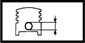
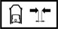

ENGINE PISTON
- Path
- Technical Data > Manufacturing data > 10 ENGINE > 1028 PISTONS AND CONNECTING RODS > ENGINE PISTON
- Kind
- technical data / specifications
- Applies to
- all engines; all production periods
- Interactive page
- https://sloeber94.github.io/elrnDB-aGt/en/#/2921834
Applies to: all engines; all production periods
Gudgeon pin housing diameter (mm) | Validity |  | ||
|---|---|---|---|---|
20.006 ÷ 20.012 | 2.0 JTS | |||
Maximum difference in weight between pistons (g.) | Validity |  | ||
± 5 | 2.0 JTS 3.2 V6 | |||
Piston - cylinder liner play (mm) | Validity |  | ||
Category B | Category A | Category C | ||
0.039 ÷ 0.061 | 0.038 ÷ 0.058 | 0.042 ÷ 0.062 | 2.0 JTS | |
Piston outer diameter (mm) | Validity |  | ||
Category B | Category C | Class A | ||
82.959 ÷ 82.971 | 82.969 ÷ 82.978 | 82.952 ÷ 82.962 | 2.0 JTS | |
Piston outer diameter (mm) | Validity | | ||
|---|---|---|---|---|
Category B | Category A | Category C | ||
92.915 ÷ 92.925 | 92.905 ÷ 92.915 | 92.925 ÷ 92.935 | 3.2 V6 | |